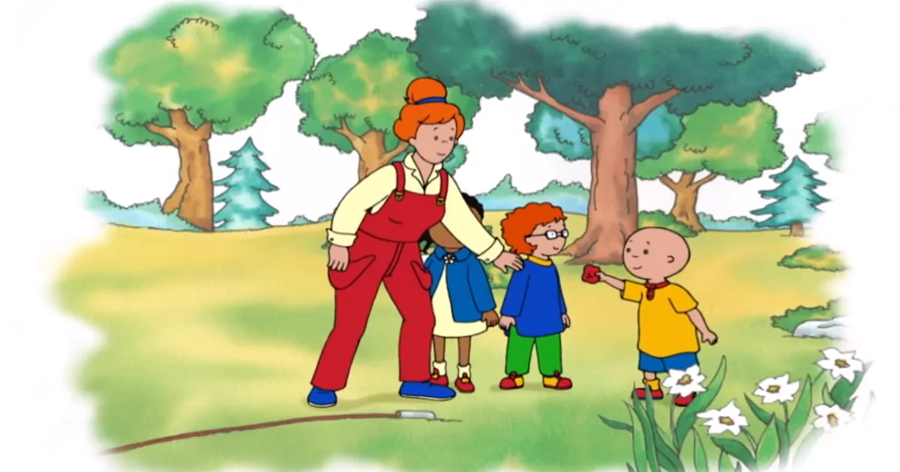

Caillouを見る。ビーンバッグを使った遊び
 Caillou - WildBrain - YouTube
Caillou’s Sleepover | Caillou Cartoon - YouTubeを見ているとビーンバッグを使った遊びをするところが描かれていた。お手玉のようなものだ。
ビーンバッグレースはくじを引いてペアを決め2組に別れる。一方の組は離れた木の側に立つ。第一走者はスタートラインから木まで走りビーンバッグを手渡す。第二走者はビーンバッグを手にゴールする。カイユーは走ることに夢中で第二走者を無視してゴールする。カイユーは勝ったと叫ぶ。そこへ女の子が私を忘れていると詰め寄る。待ち受けている人間をスルーするというのは子供でもあり得ない。カイユーを知的に低く描きすぎている。ナレーションでは集中していたせいだとフォローしているが無理がある。
次のレースでは女の子が滑り台まで走る。滑り台の上から転がしたビーンバッグを男の子が拾う。砂場を囲う縁を歩いてゴールするのだがカイユーはバランスを崩しそうになる。別の男の子が先にゴールする。レースよりも縁を渡れたことがカイユーには喜ばしく思えている。初めて自転車に乗ることができたときの達成感に近い。子供にとってバランスは重要なことだ。レース後にはおやつのゼリービーンズが配られる。楽しい遊びの締めくくりを演出するために食事のシーンが選ばれるのだ。
ナレーションではゼリービーンズがカイユーらの好物であると説明される。
Jelly beans were definitely Caillou favorite kind of bean and he knew someone else who just loved them.
ゼリービーンズの材料は水あめ、グラニュー糖、かたくり粉と水だ。カイユーはすでに砂糖菓子を何度も与えられていると考えられる。子供が砂糖漬けにされているのは残念だ。休憩時のおやつはりんごやバナナが望ましい。ゼリービーンズをいくら食べても満腹感は得られない。
カイユーは帰宅して妹のロージーとも簡単なビーンバッグレースをしてゼリービーンズを頬張る。砂糖菓子がなくなるとレースはできないと主張する。ご褒美がないと遊びですら続けるモチベーションが沸かないのである。
There are no more jelly beans to win.
Caillouは英語のリスニングには良いが教育上の配慮がなされた物語ではない。制作者が何も考えていない印象だ。